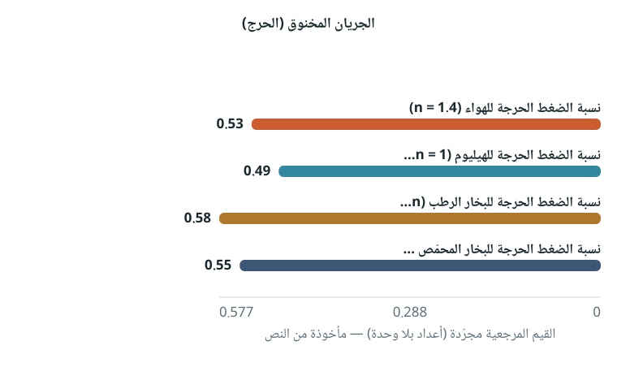

الجريان المخنوق (الحرج)
Choked Flow
حالة يبلغ فيها الغاز سرعة الصوت عند أضيق مقطع، فلا يزيد التدفق بعدها بخفض ضغط المصبّ؛ وتبدأ عند نسبة ضغط حرجة تعتمد على أسّ التمدد: 0.528 للهواء.
حين يجري غاز من ضغط مرتفع إلى ضغط منخفض عبر فوهة أو صمام، تزداد سرعته بازدياد نسبة الضغط. لكن الزيادة لها سقف: عند نسبة حرجة يصبح الجريان في أضيق مقطع بسرعة الصوت المحلية، وبعدها تنحرف أي زيادة في فرق الضغط إلى موجة صدمة خارج المقطع لا إلى زيادة في معدل التدفق. النتيجة العملية أن التدفق يتوقّف عن الاستجابة لخفض ضغط المصبّ، ويبقى تابعًا لضغط المدخل وكثافته ودرجته. والنسبة الحرجة تُحسب من أسّ التمدد n: للهواء 0.528، وللبخار المحمّص 0.546، وللبخار الرطب 0.577، وللهيليوم 0.487. ولهذه الظاهرة وجهان: عيب يجب ألا يُصمّم عليه نظام تهوية أو تفريغ لأن الزيادة الإضافية في فرق الضغط لا تُنتج تدفقًا، ونعمة تُستثمر في فوّهات القياس الحرجة و«الخانق الصوتي» فيمنح معدل تدفق ثابتًا لا تتأثر بتقلّبات الضغط الخلفي.
كيف تعمل الظاهرة؟
المعلومة عن انخفاض الضغط في الغاز تنتقل بسرعة الصوت، فإذا وصل المائع في أضيق مقطع إلى سرعة الصوت لم يعد يستطيع «إبلاغ» المقطع بأن الضغط خلفه أقل، فتنقطع سلسلة الاستجابة: أي خفض إضافي في ضغط المصبّ يبقى خارج المقطع ولا يزيد معدل التدفق الكتلي. والمقطع الحرج هو الأصغر مساحةً، وقد يكون عنق الصمام أو حلق الفوهة. وهذا سبب صيرورة الخانق الصوتي منظّم تدفق طبيعيًا بلا أجزاء متحركة: يثبّت معدل التدفق مقابل تقلّبات الضغط الخلفي.
العلاقة بالأرقام
المعادلة المنشورة: p_c/p₁ = (2/(n+1))^(n/(n−1)). وللهواء (n = 1.4) النتيجة 0.528، وللبخار الرطب (1.135) 0.577، وللبخار المحمّص (1.30) 0.546، وللهيليوم (1.667) 0.487. والتدفق الكتلي عند الاختناق m_c = A_c √(n p₁ ρ₁) (2/(n+1))^((n+1)/(2(n−1))) حيث A_c مساحة المقطع الحرج. وفي الصمامات تُختصر الحكاية إلى رقم تجاري: الهبوط الحرج للغاز نحو 47% من ضغط المدخل المطلق، أي p_o ≈ 53% من p_i، وبعده يُحسب التدفق من ضغط المدخل لا من فرق الضغط.
مفاهيم متقاربة
الخطأ الأول هو الاستمرار في حساب التدفق بمعادلة الجذر التربيعي للهبوط بعد الوصول إلى الشرط الحرج، فيُتوقّع تدفق أكبر كلما خُفض الضغط الخلفي — وهو ما لا يحدث. والثاني تطبيق أرقام الهواء على البخار: 0.528 لا تصلح للبخار الرطب (0.577). والثالث الحساب بضغط قياسي بدل المطلق، فينزاح الرقم كله. والرابع الإغفال بأن اختناقًا في صمام لا يعني اختناقًا في فوهة النظام: المقطع الحرج هو الأصغر وقد يكون في مكان آخر.
حدود التطبيق
المعادلات مبنية على غاز مثالي بأسّ تمدد ثابت، وتنحرف للغازات الحقيقية عند الضغوط العالية وللغازات ذات الحرارة النوعية المتغيّرة وللجريان ثنائي الطور. وفي الصمامات الرقمية الأرقام كسرية وتعتمد على معاملات المصنّع (FL و xT) ونسبة الضغط الفعلية عبر الصمام لا عبر النظام. كما أن الاختناق لا يعني ثبات التدفق بشكل مطلق: التدفق المخنوق يبقى تابعًا لضغط المدخل وكثافته، فأي تغيّر في المنبع يمرّ إلى المصبّ بلا حماية.

| الكمية | القيمة | المصدر |
|---|---|---|
| نسبة الضغط الحرجة للهواء (n = 1.4) | 0.528 — | [1] |
| نسبة الضغط الحرجة للهيليوم (n = 1.667) | 0.487 — | [1] |
| نسبة الضغط الحرجة للبخار الرطب (n = 1.135) | 0.577 — | [1] |
| نسبة الضغط الحرجة للبخار المحمّص (n = 1.30) | 0.546 — | [1] |
| الهبوط الحرج للغاز في صمام تحكّم كنسبة من ضغط المدخل المطلق | 47 % | [2] |
المصادر
- 1 Nozzles — Gas flow through nozzles and sonic chokes — The Engineering ToolBox. www.engineeringtoolbox.com/nozzles-d_1041.html · اطُّلع عليه 2026-11-28
- 2 Liquid, Steam and Gas - Flow Coefficients Cv — The Engineering ToolBox. www.engineeringtoolbox.com/flow-coefficients-d_277.html · اطُّلع عليه 2026-11-28
استشهد بهذا المصطلح
الصيغتان مبنيتان من بيانات الصفحة نفسها: العنوان والتاريخ ورابط النسخة المنشورة.
الجريان المخنوق (الحرج) — Choked Flow. (2026). ديوان المعرفة — انفراد. https://infiradev.com/diwan/terms/term-choked-flow.html
@misc{term-choked-flow2026,
title = {الجريان المخنوق (الحرج)},
titleaddon = {Choked Flow},
howpublished = {{ديوان المعرفة — انفراد} — مرجع علمي عربي},
year = {2026},
url = {https://infiradev.com/diwan/terms/term-choked-flow.html},
urldate = {2026-11-28},
note = {مراجعة علمية: Abdullah Al-Huwaidi}
}
راجعه: Abdullah Al-Huwaidi · 2026-11-28 · آخر تحديث 2026-11-28